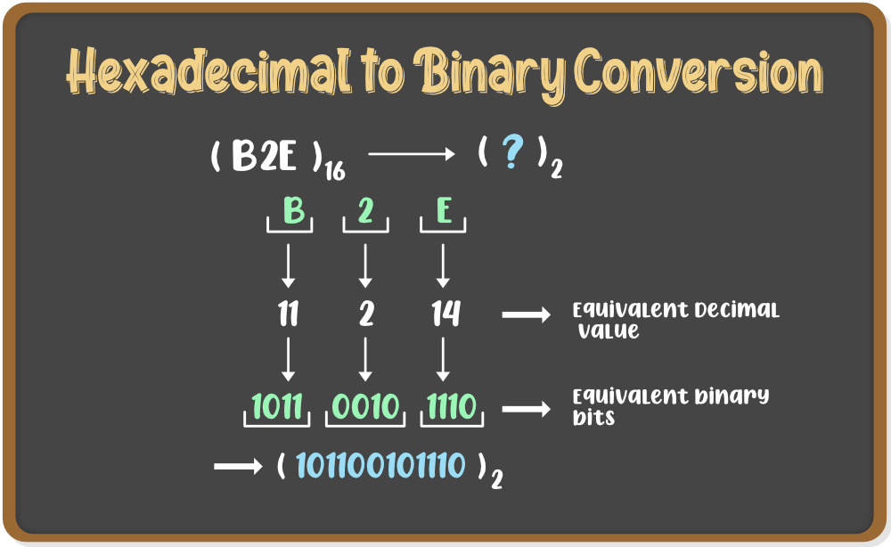

INTRODUCTION OF HEXADECIMAL NUMBER SYSTEM
"The Hexadecimal Number System has the base as 16 (hexa = 6 and deci = 10)." So it is also called the base 16 Number System. In this Number System, there are 16 digits which are used in representing Numbers in Hexadecimal form. It is similar to the Decimal Number System because the first 10 digits remain the same in both the Number Systems. However, 10 in the Decimal Number System is representedas A in the Hexadecimal System, 11 as B, 12 as C, 13 as D, 14 as E, 15 as F and 16 as 10. So the 16 digits of the Hexadecimal Number System are 1, 2, 3, 4, 5, 6, 7, 8, 9, A, B, C, D, E, F.
HEXADECIMAL TO OTHER CONVERSIONS
Hexadecimal to Binary
A Hexadecimal Number is converted into a Binary Number by writing the 4 digit Binary equivalent of each Hexadecimal digit in the Number by looking into the conversion table.

Hexadecimal to Decimal
Any Number in Hexadecimal form is converted into its Decimal equivalent by multiplying each digit with its positional values of 16.
Hexadecimal to Octal
A Hexadecimal digit can be converted into Octal form by first converting it into a Decimal Number and then writing its Octal equivalent.